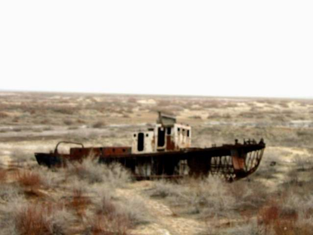
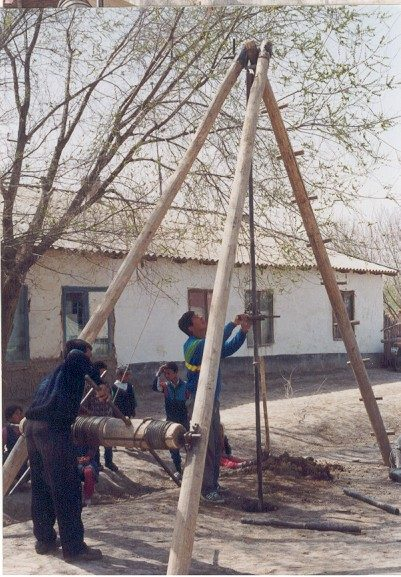
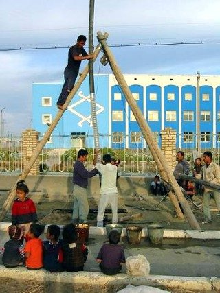

Where We Worked · From 1993
Uzbekistan
Where JDA began: clean water for villages near the Aral Sea, small businesses for families in poverty, and care for communities affected by leprosy.
Bob Hedlund moved his family to Tashkent in 1992, and JDA began operating in Uzbekistan in 1993. From the capital, the work reached Karakalpakstan and the Aral Sea in the far west, Shakhrisabz and Samarkand in the south, Jizzak, and Kokand in the Ferghana Valley.

Clean water in Karakalpakstan
As the Aral Sea shrank, many villages in northern Karakalpakstan were left without safe drinking water. JDA drilled shallow wells with a manual cable-tool drill and fitted them with hand pumps made in Uzbekistan. The wells tap water that has seeped from unlined irrigation canals and sits on a clay layer 3 to 15 meters below the surface. Each well served 10 to 12 families.
In all, JDA drilled 1,000 hand-pump wells in Uzbekistan.


Health: SODIS and leprosy care
Solar water disinfection
SODIS is a simple Swiss-developed method: fill clear plastic bottles with water and leave them in the sun. JDA's office in Kokand introduced it through the public schools of the Ferghana Valley, teaching children who then taught their families. In 2005 JDA reported that SODIS communities saw childhood diarrhea fall by 46.5 percent, and the Ministry of Health approved expanding the program to five regions.
JDA's report on the second phase of the project, "Solar Bottles for Our Health" (April 2003 to March 2004), gives the background. In 2001 JDA's Kokand branch partnered with EAWAG, the Swiss institute that developed SODIS, on a pilot in Dangara district. The dissemination project then taught SODIS in ten villages of Rishton and So'x districts, working with district health officials and local volunteers. In a health survey in October 2003, SODIS communities reported that more than half of the population used SODIS during the summer and 38 percent of households used it every day, and more than 89 percent of users wanted to continue after the winter. Water-borne illness in the project villages fell by about two-thirds in two years, while it changed little or rose in comparison villages.
Read the 2003 to 2004 SODIS report (PDF, 359 KB).
Read the SODIS case study from Uzbekistan (PDF, 151 KB).
Leprosy care
Leprosy control was one of JDA's oldest programs. JDA trained Uzbek doctors in surgery and lesion care, and improved living conditions in leprosy communities. At the Krantau community in Karakalpakstan, JDA brought natural gas so families could heat their homes, cook indoors and have hot water for the first time. With the men of the community, JDA deepened a canal to bring irrigation water by gravity to the community garden, and built a new bathhouse and latrines.
Humanitarian aid
JDA distributed clothing to orphans, hospital patients, boarding schools and families in need, and helped repair a children's tuberculosis center in Nukus with a new roof.
Poultry and micro-credit
In 1999 JDA started a poultry program near Shakhrisabz with seven families. Each family raised chicks at home to sell. By 2003 about 160 families in 12 villages took part, and more than 60 percent of them were headed by widows or abandoned wives, or relied on a woman as the main earner. A hatchery, feed mill, granary and butchery supported the families.
In Muynak, the former fishing port on the Aral Sea, JDA's micro-credit program helped more than 60 new family businesses get started by 2003. Borrowers joined small solidarity groups and took a series of short loans, each larger than the last. JDA also offered longer-term loans for livestock and, near Samarkand, provided looms and yarn for widows and women-led families to weave and embroider goods for the tourist bazaars.
Computer training in Jizzak
In 1996 JDA opened a computer training center, CEBIS, in Jizzak. It trained young people in computer operations, maintenance and software development, and several graduates earned Microsoft certification. CEBIS also provided internet service to the city, and was later handed over to local management.
Stories from the micro-credit program
These accounts come from JDA's 2005 stories. Names have been left out.
"Without JDA's credit, their training and their trust in me, I would not be able to use my skills and talents to help my family, and now there is a great demand for my work."
He had trained at an art college but, with unemployment above 70 percent and the fishing industry gone, had never been able to use his skills. He joined a solidarity group and took a first loan of $40 for a small trading business. After five four-month loan cycles he opened the only engraving and memorial art business in Muynak.
"The JDA micro credit program came to my village at the right time for me and my family. We were able to get a group of women together and I was able to take a start-up fund and paid it back after I sold my first carpets."
For the very poorest families, JDA added a credit for ten goats, repaid over two years. Goats breed twice a year, so families could sell a few to cover interest and living costs and finish the loan with a herd of their own. In a village in the poultry program, one mother of two reported a profit of about 80,000 soum (about $80) from each two-month cycle of raising chicks, enough to buy medicine and clothes and to start saving.
The forced closure
Beginning in 2005, during a conflict between the governments of Uzbekistan and the United States, Western NGOs in Uzbekistan were forced to close. JDA was one of the last to lose its registration. In October 2006 JDA in Uzbekistan was ordered to close, and it contested the closure and the penalty in the courts. By then JDA's work in northern Afghanistan, run with support from its Uzbek offices since 2001, had become its main program.
A note on figures. JDA's Uzbekistan totals grew with the programs, and sources from different years give different numbers. JDA made 3,000 small loans, 85 percent of them to women, with a 95 percent repayment rate. Where this page gives a number, it names the year it comes from.
Sources for this page
- JDA projects page and microfinance page (2003), SODIS and micro-credit stories (2005), and home page (2007), as archived by the Internet Archive.
- JDA, "Solar Bottles for Our Health: Report of the SODIS Dissemination Project Phase II, April 2003 to March 2004" (Kokand, December 2003), on the Publications page.
- JDA history page (2016) and JDA timeline (PDF).
- Photo of hand drilling in Karakalpakstan, 2002: supplied by Bob Hedlund.